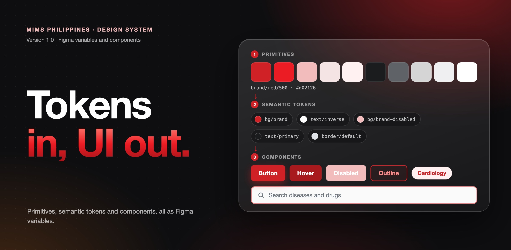

A design system, built from tokens up
A Figma library for the MIMS Philippines disease guidelines and news pages, where every fill, size and style is a variable, so a change to one token reaches every component and template that uses it.

- Project
- Design system, version 1.0
- Product
- MIMS Philippines, disease guidelines and news
- Tools
- Figma and Claude
- Released
- 20 September 2026
- Scope
- Colour, typography, spacing, grid, borders, elevation, icons, motion, components, patterns and page templates
Overview
A mirror of the live site, made reusable.
This library records what the live disease and news pages actually are. I read every colour, size, radius and shadow from the computed styles of the site, then rebuilt them in Figma as variables, text styles and components, using Figma's library features end to end.
It is organised in four layers: foundations, components, patterns and templates. Each page of the file has one job, and a Getting Started page explains the structure, the naming rules and how to keep the file honest as the site changes.
Tokens
Raw values below, roles on top.
Colour is split in two. Primitives hold the raw hex values: the brand red and its tints, a grey ramp and the status colours. Semantic tokens alias them and are named for their role: text, background, border, icon and feedback. Components bind only to the semantic layer, and the primitives are hidden from the pickers on purpose.
Spacing, radius, border width, size, breakpoint and motion each have their own collection. Variables use slash names such as text/primary, and each one carries its web code syntax, so Dev Mode shows the matching CSS value.
Components
One family per page, desktop and mobile.
Buttons, inputs and search, chips, cards, navigation, breadcrumbs, tables and feedback each get a page, with the desktop 1440 version beside the mobile 390 one. Components use Title Case names and Property=Value variants, and hover, focus and disabled states are real variants rather than notes.
Icons are 24px outlined components, swapped through instance properties and never as variants, so tinting a vector never touches the wrapper frame.
Templates
22 page templates, all from the library.
Disease templates cover the landing page, the 18 disease tabs and search results. News and updates templates cover the landing page, four article types, four listings and search results. Each is built from library components with auto layout, at desktop and mobile widths.
A States section on each page shows what a static frame cannot, such as the sticky nav on scroll, the open mobile menu, an error toast and the mobile filter.
Gaps
What the live site is missing.
Eleven components do not exist in production, so I listed them as a backlog with a severity and the reason each one matters. The most serious is the focus ring: the search input removes its outline with no replacement, which fails the WCAG focus visible criterion. Alerts, error states, empty states and toasts follow.
I also corrected three production behaviours rather than copy them: a chip hover that reflowed the text, a tab hover that matched the active state, and a breadcrumb size that overflowed on tablet.